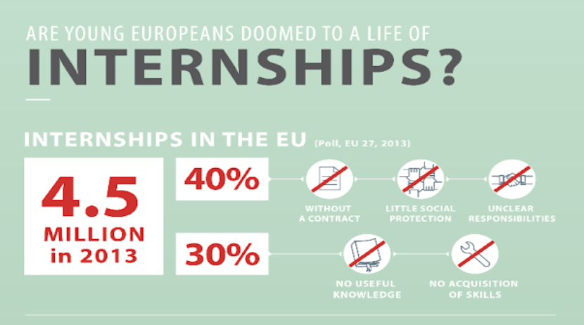
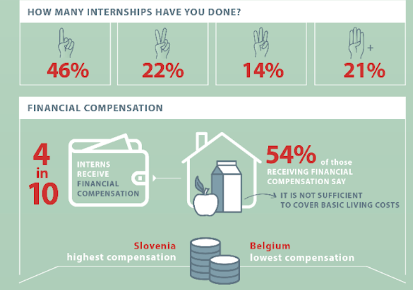

Can you pay my bills? Based on the 2020 Resolution of the European Parliament, a long-standing discussion about unpaid internships seems to still be asking questions about whether they are a necessary bridge between education and employment or an opportunity for businesses to take advantage of free labour. Should the European governments take further steps and act to protect the working conditions of stagiaires and interns across the continent?
By Mikaela Skår (SE)
In February 2022, the debate over working conditions for interns was reignited, with members of the European Parliament renewing calls to ban unpaid internships. Since 2018, all interns in the European Parliament have to be paid for their work, but other EU institutions, such as the European External Action Service (EEAS) continue to hire unpaid interns - and in the EU as a whole, an estimated 61% of interns receive no pay. Critics argue that this discriminates against young people from a less privileged socio-economic background, who might not be able to afford to take an internship that does not provide them with a fair wage. Since internships can boost graduates’ resumes, the alleged discriminatory effect of unpaid internships could perpetuate inequality throughout their careers. On the other hand, proponents argue that interns may be a burden for companies, as they require significant training and resources, and that paying them is therefore an unfair expectation. Currently, European quality standards only ask employers to specify whether the position is paid; there is no stipulation for employers to pay their interns. As such, Member States choose whether to allow unpaid internships and under what circumstances.
The European Parliament has passed multiple resolutions concerning internships, including a February 2022 resolution on post-pandemic employment opportunities for young people. In this and other documents, it has taken the stance that unpaid internships amount to exploitation of young people and should therefore not be permitted in the Union.
However, the Parliament cannot initiate legislation; only the European Commission and Member States have that ability. Thus far, the Commission has not crafted any legislation on internship payment, despite its shared competence on the issue of employment.
Shared competence means that both Member States and the EU can pass laws on the matter, but the EU has legislative priority.
The International Labour Organization (ILO) is a United Nations (UN) agency which aims to advocate for social and economic justice globally. It has a UN-granted mandate to set international labour standards, and has previously
recommended stronger regulations on internships.
While the EU cannot compel the ILO to take specific actions, as it is not an EU institution, it has previously done research on conditions for interns in the EU, and has the ability to create guidelines for countries, including
EU countries, on working conditions.
As there are currently no EU-wide guidelines or laws governing internships, Member States have the right to legislate freely in the area, including setting their own policies on minimum wage or working conditions. This means the rules concerning
internships vary significantly between states. For instance, Germany stipulates that any internship that lasts less than three months does not need to be paid, while in
Ireland, all interns are guaranteed minimum wage.
Employers have the primary responsibility for their own workplaces. Using national laws and guidelines, it is their responsibility to regulate working conditions, including setting wages. Employers can include both companies of various sizes, non-profits, and governmental organisations such as EU institutions. The reasons why companies choose to employ interns are many, but for most organisations
interns can be an investment in their own future. Hiring interns are an opportunity for employers to discover future employees. Even those interns the employer may not want to pursue for a job offer can
add value by doing lower-level tasks, allowing employees to focus on more important duties. The benefits of not paying interns may also seem clear to
employers - it cuts costs. Despite the fact that studies have shown paying interns is better economically for companies in the long run,
many still choose not to in order to save on hiring costs. Interns are, of course, the ones most affected by internship conditions. According to a study by the ILO, the average intern is from an old EU country, below 25 years of age and pursuing an internship as part of their university studies.
Most interns will complete more than one internship either during or immediately after their studies and many choose to do an internship in order to receive academic credit for it, as part of their studies. According to the same study, just over half were paid for their work and less than half found the compensation sufficient to cover their living costs.
Standardise best PRactices about INTernships (SPRINT) is an Erasmus+ funded programme which aims to lobby Member States to standardise internship regulations across the EU, by gathering information about current best practices and creating guidelines for Member States and employers to use.
One key EU policy in place is the Youth Guarante, which commits all Member States to ensuring that young people are guaranteed a “good quality offer” of employment, continued education, apprenticeship, or traineeship within four months of leaving education or becoming unemployed. Traineeships offered under the Youth Guarantee need to follow the Quality Framework for Traineeships (QFT), which provides educational and labour standards that organisations should follow. However, the standards laid out in the QFT are somewhat narrow; for instance, employers are asked to clarify whether they provide health insurance or payment for interns, but it does not set out guidelines for whether or not to provide these. This means there are no EU-wide standards for internship compensation.
This lack of EU streamlining means that measures vary significantly between countries, with certain countries doing more to achieve fair wages for interns than others. For example, as mentioned previously, Ireland has a National Minimum Wage that applies to all employees - including interns. However, as there is no legal definition of an internship in Irish law, companies can get away with paying less or nothing, provided that the intern is not aware of their right to wages. In certain other Member States, such as Germany and France, internships must be paid if they are longer than a few months. However, there are currently no Member States where unpaid internships are completely banned.
One of the key ways the Youth Guarantee is funded is through the Youth Employment Initiative (YEI), a European Commission fund that makes up part of the European Social Fund Plus (ESF+). YEI can be used by Member States to fund the provision of internships for young people leaving education; the specifics of how funding is implemented is up to national governments.
One fundamental conflict is at the core of the issue: Should interns be paid for their work? Proponents of wages, especially fair wages, for interns often emphasise the negative consequences unpaid internships have on young people. This year, a collection of European youth organisations collectively denounced unpaid internships as exploitative, unjust, and unequal. Specifically, they argued that unpaid internships exploit young workers by using them for free labour and that unpaid internships are inaccessible to large swaths of society due to their lack of job security and the inability to sustain oneself during an internship. For example, a recent graduate from a less affluent background may not be able to afford to take on an unpaid internship, as they would be unable to pay their bills or afford basic necessities without an income. On the other hand, someone in a similar situation who has parental support or savings that can serve as their income during the internship would not face the same struggles. This could mean that students and graduates from less economically stable backgrounds lose out on the opportunity to intern, decreasing their job prospects and ability to gain work experience - and decide what career path they would like to pursue. On the other hand, proponents of unpaid internships argue that they provide interns with valuable work experience, giving them a leg up in a competitive job market. As such, interns add value to the business while simultaneously receiving valuable on-the-job training for their future career.
However, there are also practical concerns involved. For one, how small and medium sized companies (SMEs) will afford to pay interns, especially at competitive rates. While larger companies and governmental
organisations may be able to afford to increase wage expenses by paying their interns, certain companies may
not be able to afford to hire interns if they are
required to pay them. Another concern surrounds employment benefits beyond wages. Whether or not interns should be paid, a separate issue is what, if any, kind of benefits they should be
entitled to. Currently, this also varies between Member States - in certain countries, such as Austria, interns are not entitled to sick leave or full insurance while they’re working. Actors such as SPRINT have previously emphasised the need for improved benefits for interns, but as with wages, there is still
no EU standardisation.
Traditionally, internships have taken place at the offices or place of work of the employer, allowing the intern to come to their prospective place of work and become part of the working culture. However, when employers began to c lose down workplaces due to the COVID-19 pandemic, internships were also affected. As workplaces became virtual, so did internships. There are some benefits to this new mode of interning for those seeking internships; people with disabilities may face fewer barriers to obtaining an internship (depending on the nature of their disability), and interning virtually may contribute to a healthier work-life balance. There are similar advantages for companies; they can recruit promising interns from anywhere in the world, not just their immediate surroundings, and they may be able to offer more internships due to the lower cost of hosting online interns. On the other hand, virtual internships may lack the ‘informal’ benefits of a traditional internship, such as networking and learning about their targeted employer’s office culture.
With regards to unpaid internships specifically, virtual versions again pose their own unique challenges. A lot of employers that offered paid internships previously, still pay their interns when the work is online. However, other employers took this opportunity to offer
internships that were not only unpaid - interns had to pay to participate. Companies such as TARGETjobs and Forage offer students the chance to intern; if they pay a fee, either to participate or to receive a
record of their internship. Another, less controversial, form of internship that has become more popular as a result of
digitalisation during the pandemic is micro-internships. These are short internships, often lasting just a few days, during which the intern gets to know more about the employer and the work they do, and try their hand at a few basic tasks.
So what does the future of internships look like? As more and more companies are choosing to forgo centralised offices in favour of virtual connections, will this change how companies treat internships? Virtual and shorter internships are growing in popularity now, but it’s hard to predict whether or not this trend will continue. If it doesn’t,
what kind of internships will take its place? And, perhaps most importantly, will new types of internships mean worse working conditions and wages; or better?
Taking the first step into the job market can be daunting for young people. Internships, whether before or after graduation, could be a way to bridge the gap between education and the workplace, but the question remains whether that is true for unpaid internships as well. Do they take advantage of struggling young people or provide valuable experience at a low cost to the trainee? Whichever way you feel, the question remains of how mainstreaming paid internships would be financed and created. Given that there are multiple funding opportunities for internships within the EU, are these being used effectively - and if not, why not? But regardless of what resources are used to affect the situation, the fact remains that regulations currently depend completely on where you live, rather than on the work you do.
Questions to consider: